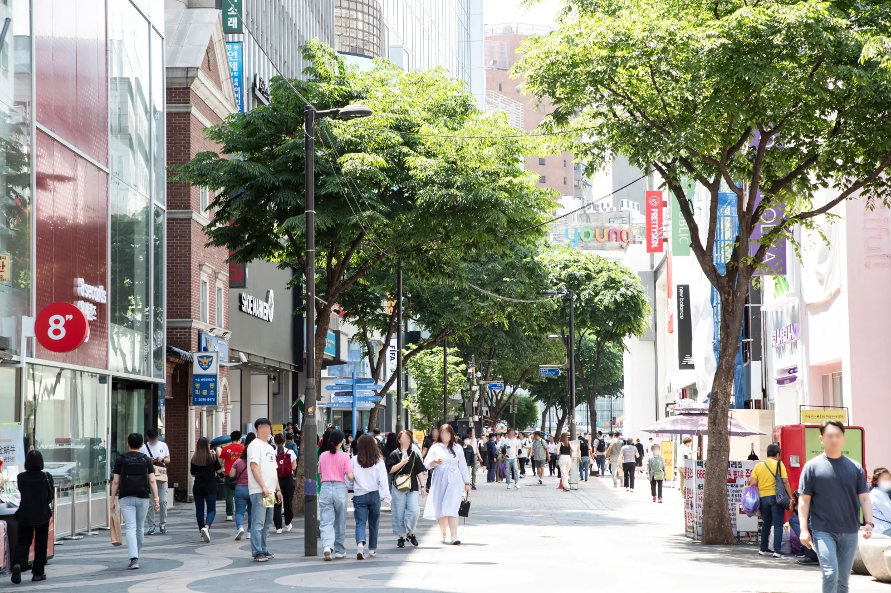
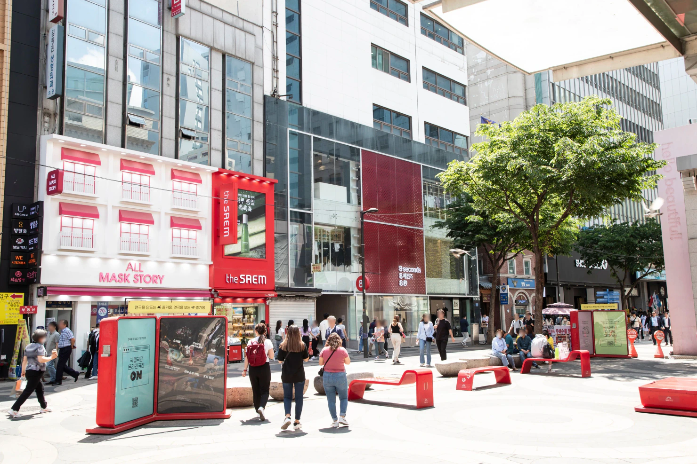
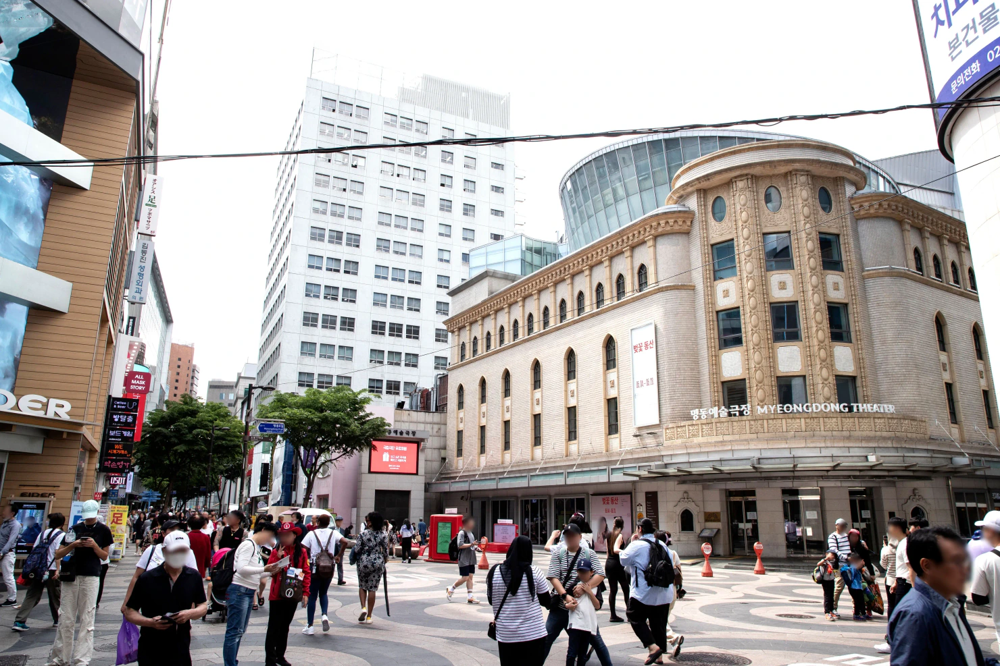
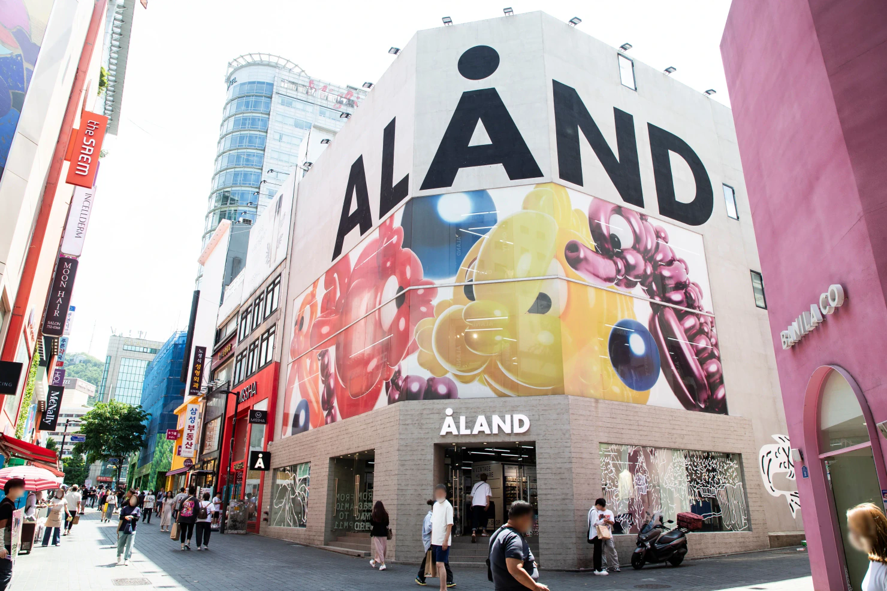
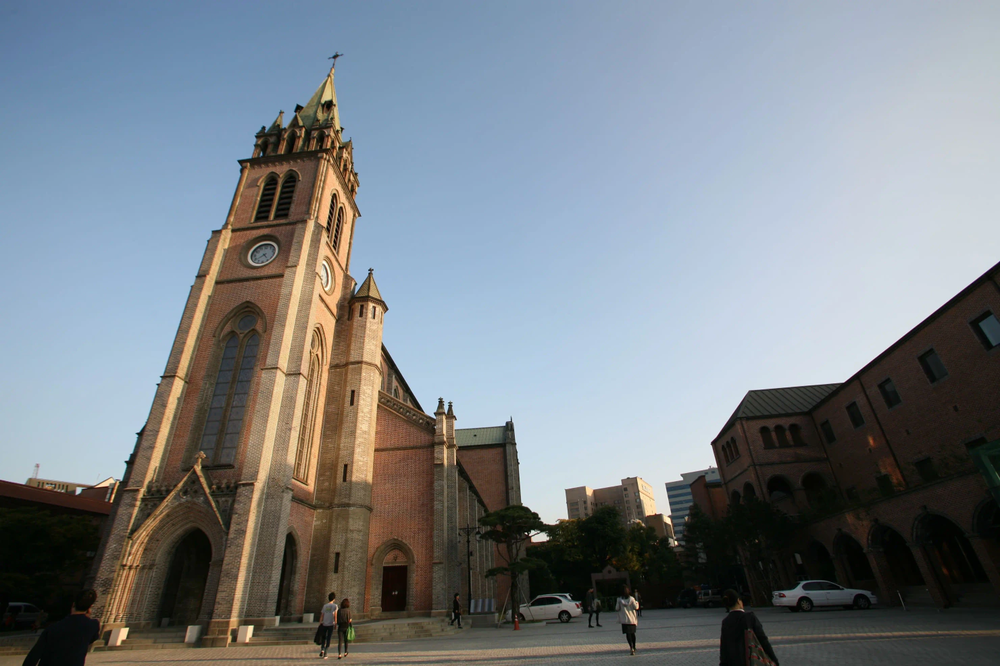
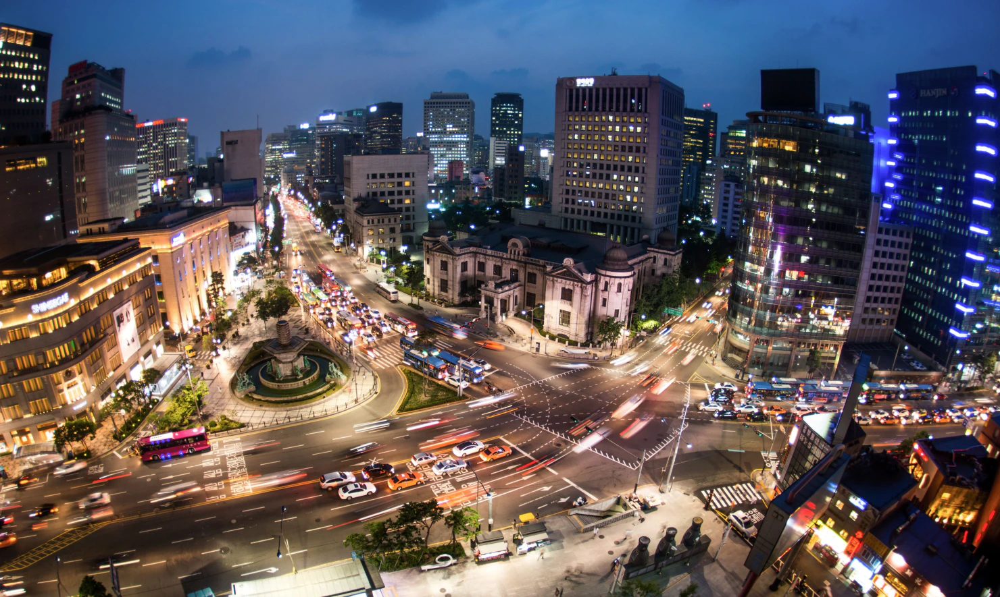

Guía de Myeongdong 2026
Myeongdong es fácil de malinterpretar.

Si llegas esperando un barrio tranquilo de Seúl, las multitudes, los escaparates brillantes y el intenso tráfico turístico pueden decepcionarte. Pero si lo utilizas para aquello en lo que realmente funciona bien —K-beauty, compras concentradas, una comida sencilla, una pausa céntrica entre visitas y una base cómoda para la tarde-noche— resulta mucho más útil.
Para la mayoría de los viajeros, Myeongdong no necesita un día entero de turismo.
Una primera visita puede ser tan sencilla como:
compras o una cita de belleza → una comida de verdad → Catedral de Myeongdong → una opción para la noche
Esa última opción puede ser Namsan, NANTA o Euljiro.
Elige una.
El error no es visitar Myeongdong. El error es pasar seis horas entrando en tiendas parecidas porque nunca decidiste para qué habías venido.
Para qué merece realmente la pena Myeongdong
Myeongdong es una de las zonas más orientadas al turismo de Seúl.
Eso no es automáticamente una razón para evitarla.
Las mismas cosas que la hacen turística también la hacen práctica: muchas tiendas están concentradas en una zona relativamente pequeña, resulta fácil comparar productos de belleza, los restaurantes están cerca unos de otros, es más habitual encontrar atención en inglés que en muchos barrios corrientes y la zona queda entre varios puntos importantes del centro de Seúl.
Para alguien que visita Seúl por primera vez, eso reduce fricción.
Puedes pasar la mañana en un palacio o un barrio tradicional, volver al centro, comprar en Myeongdong, comer y después decidir si la noche continúa hacia Namsan o Euljiro.
No necesitas un plan de transporte complicado para cada hora.
Myeongdong funciona mejor cuando las compras tienen un propósito
Si la K-beauty ya está en tu lista, Myeongdong tiene sentido.
Si tienes una cita de análisis de color personal o maquillaje, todavía más, porque esa reserva puede ordenar el resto de la tarde.
Si el plan es simplemente «pasear por Myeongdong y ver qué ocurre», la zona puede cansarte rápidamente. Hay demasiadas tiendas como para que intentar verlo todo sea una estrategia útil.
Decide primero qué estás buscando.
También funciona como punto de descanso
Myeongdong puede encajar entre bloques de turismo más exigentes.
Quizá ya lleves horas caminando por Gyeongbokgung, Bukchon, Insadong o Jongno. Tal vez lo siguiente que necesitas no sea otra gran atracción.
Myeongdong te permite comer, sentarte, comprar bajo techo, entrar en un café, volver a un hotel cercano o simplemente bajar el ritmo antes de la noche.
Ese papel importa cuando ya llevas varias horas recorriendo otras zonas del centro de Seúl.

Quién quizá no necesite mucho tiempo aquí
Si ya hiciste tus compras de belleza, no te interesa el retail de cadenas y prefieres calles tranquilas o cafés independientes, quizá solo necesites Myeongdong para comer o dar un paseo corto.
Quienes ya han visitado Seúl también tienen menos razones para dedicar media jornada al barrio solo porque aparezca en todos los itinerarios de primera visita.
Utiliza Myeongdong cuando resuelva algo en tu viaje.
No tienes que disfrutar todos los barrios famosos de Seúl.
Empieza por el tiempo que realmente tienes
Myeongdong se vuelve mucho más fácil cuando decides cuánto tiempo estás dispuesto a darle.
Si tienes unas dos horas
Elige una sola razón para estar aquí.
Por ejemplo:
compras de K-beauty → comida
o:
Catedral de Myeongdong → cena → paseo corto por la noche
Dos horas no bastan para hacer compras serias, una cita de color personal, recorrer puestos de comida callejera, visitar la catedral y subir a Namsan sin convertirlo todo en una carrera.
Quita algo.
Si tienes entre tres y cinco horas
Este es el rango que utilizaría para muchos viajeros en su primera visita.
Tienes tiempo suficiente para comprar sin correr, comer una comida de verdad, recorrer las calles principales y parar en la Catedral de Myeongdong.
Después añade una actividad más si el horario encaja:
- una experiencia reservada de belleza o color personal;
- NANTA;
- Namsan;
- Namdaemun;
- Euljiro más tarde por la noche.
La palabra importante es una.
En un mapa de Seúl todo parece lo bastante cerca como para añadir más. Cuando estás allí, caminar, esperar, cargar bolsas, hacer cola en restaurantes y cumplir horarios de reservas cambia el cálculo.
Si tienes un día completo
Puede tener sentido cuando Myeongdong forma parte de una ruta más amplia por el centro de Seúl.
Por ejemplo:
Namdaemun → compras en Myeongdong → experiencia reservada → cena → NANTA
o:
turismo por el centro de Seúl → Myeongdong → cena → Namsan
Lo que tiene menos sentido es pasar desde la mañana hasta la noche dentro de las mismas calles comerciales salvo que comprar sea una de las razones principales de tu viaje.
Si tu hotel está en Myeongdong
No conviertas cada día en «un día de Myeongdong».
Eso desperdicia la principal ventaja de alojarte aquí.
Utiliza el barrio antes y después de las visitas principales.
Sal hacia los palacios por la mañana. Vuelve, deja las bolsas, descansa y después sal otra vez para cenar, comprar o hacer una actividad nocturna.
Un hotel céntrico es útil precisamente porque puedes volver a él.
No necesitas justificarlo pasando todo el viaje a cinco minutos del vestíbulo.
Dónde empezar: ¿Myeongdong Station o Euljiro 1-ga?
No existe una única entrada correcta a Myeongdong.
La zona queda entre Myeongdong Station, en la línea 4, y Euljiro 1-ga Station, en la línea 2.
El mejor punto de partida depende de dónde estabas antes y hacia dónde quieres continuar después.
Empieza en Myeongdong Station cuando el lado sur encaje con el día
Tiene sentido si llegas por la línea 4 o si Namsan forma parte del plan posterior.
También te deja directamente en el lado sur de la zona comercial.
Desde aquí, una estrategia sencilla consiste en avanzar gradualmente hacia el norte en lugar de caminar en círculos.
Empieza en Euljiro 1-ga si llegas desde el norte
Euljiro 1-ga funciona mejor cuando tu día ya está alrededor de City Hall, Euljiro o alguna ruta de la línea 2.
No hagas otro transbordo únicamente para llegar a una estación llamada «Myeongdong».
Entra por el norte y atraviesa el barrio.
Es una de esas pequeñas decisiones en Seúl que ahorran más energía de la que parece en el mapa.
Utiliza las dos estaciones como extremos opuestos
No tienes que salir por la misma estación por la que entraste.
Una ruta de compras más eficiente puede ser:
Myeongdong Station → calles comerciales → catedral / norte de Myeongdong → Euljiro 1-ga
o al revés.
Eso da una dirección al paseo.
Sin ella, es muy fácil descubrir que ya has pasado tres veces por la misma tienda de cosméticos.

Las bolsas pueden cambiar la ruta
Una ruta que parecía fácil a las 14:00 puede sentirse muy distinta después de varias compras.
Si te alojas cerca, dejar las bolsas en el hotel antes de cenar o subir a Namsan puede ser más útil que encajar otra tienda en la tarde.
Esto importa todavía más para familias, viajeros con compras duty-free o cualquiera que ya empezara el día con una mochila llena.
Planifica la segunda mitad de Myeongdong pensando en las bolsas que probablemente llevarás, no en las manos vacías con las que llegaste.
Comprar en Myeongdong sin perder media jornada
La peor forma de comprar aquí es tratar cada escaparate como una atracción independiente.
Hay demasiados.
Antes de llegar, decide cuál de estas situaciones te describe.
«Quiero K-beauty, pero no sé qué comprar»
Empieza por una gran tienda multimarca.
Úsala para entender marcas, tipos de producto y rangos de precio.
Quizá descubras que solo necesitas protector solar y productos para el cuidado de la piel. O quizá el maquillaje sea lo que realmente te interesa.
Ambos resultados son útiles.
Lo que no necesitas es entrar en todas las tiendas de belleza de la calle antes de haber acotado la pregunta.
«Ya sé qué marcas o productos quiero»
Entonces Myeongdong se convierte en un lugar para comparar, no para explorar sin límite.
Ve a las tiendas que tengan exactamente lo que buscas.
Compara el producto, el tono, el tamaño, el contenido del set y el precio final en lugar de asumir que cada promoción es automáticamente una buena oferta.
Una bolsa enorme llena de productos que no pensabas comprar no demuestra que la jornada de compras haya salido bien.
«Estoy comprando regalos»
Separa los regalos de las compras personales.
Es más fácil decidir qué podrían utilizar realmente familiares o amigos si primero fijas un presupuesto y una cantidad aproximados.
De lo contrario, las pequeñas compras se acumulan muy rápido.
También es un caso donde los artículos compactos suelen tener más sentido que productos que después crean otro problema dentro de la maleta.
«La belleza no me interesa demasiado»
Entonces no pases horas fingiendo que Myeongdong es una atracción de belleza que estás obligado a comprender.
Utiliza el barrio para moda, comida, la catedral, una experiencia reservada o simplemente como conexión entre otros lugares.
Tu viaje a Seúl no fracasa porque hayas pasado de largo cinco tiendas de cosméticos.

Para cuando las bolsas empiecen a controlar el itinerario
Ese es el límite práctico.
Cuando llevas tantas compras que ya no quieres subir una cuesta, hacer otra cola o quedarte fuera hasta tarde, las compras han empezado a cambiar el resto del día.
Si tu hotel está cerca, vuelve.
Si no, pregúntate si realmente necesitas otro bloque de compras antes de cenar.
Myeongdong es compacto.
Tus compras quizá no lo sean.
K-Beauty en Myeongdong en 2026
Myeongdong es uno de los lugares más sencillos de Seúl para convertir el interés por la K-beauty en compras reales.
El problema no es encontrar cosméticos.
Es saber por dónde empezar cuando varios pisos de productos, tiendas de marca, promociones y nombres desconocidos compiten por tu atención.
Esa decisión es todavía más relevante en 2026. Olive Young abrió Central Myeongdong Town en marzo como una tienda de tres plantas y aproximadamente 950 pyeong, diseñada específicamente para la demanda internacional de K-beauty.
Si no sabes qué comprar, empieza por una tienda grande
Una gran tienda multimarca es el punto de partida más sencillo cuando sabes que quieres skincare o maquillaje coreano pero todavía no sabes qué marcas o productos.
Utiliza la primera visita para reducir las opciones.
¿Necesitas realmente skincare, protector solar, productos para labios o maquillaje?
¿Compras para ti o para regalar?
¿Buscas productos difíciles de encontrar en tu país o simplemente precios más bajos en Corea para marcas que ya utilizas?
Responder esas preguntas vale más que salir de la primera tienda con la cesta llena.
Si ya conoces el producto, compra de otra manera
Una vez sabes la marca, el tono o el nombre exacto, hay muchas menos razones para recorrer todas las tiendas de cosméticos.
Busca el artículo concreto.
Después compara el tamaño real, los packs, la promoción y el precio final.
Una oferta «1+1» solo es una ganga si querías dos.
Un gran set de regalo solo es cómodo hasta que tiene que entrar en la maleta.
Myeongdong facilita comparar. Eso no significa que todas las promociones merezcan una compra.
Las tiendas oficiales de marca siguen teniendo una función
Las grandes multimarca son eficientes, pero no sustituyen automáticamente a todas las tiendas oficiales.
Si una marca coreana concreta es una razón importante de tu día de compras, su propia tienda puede merecer una visita por una gama más amplia, sets diferentes o servicios específicos.
La estrategia práctica no es Olive Young contra las tiendas de marca.
Es:
multimarca para entender el mercado → tienda de marca cuando exista una razón concreta
Así evitas convertir la tarde en una secuencia interminable de estanterías casi iguales.
Considera el análisis de color personal antes de una gran compra de maquillaje
Si ya planeas hacerlo en Seúl, reservarlo antes de comprar mucho maquillaje puede cambiar lo que termines comprando.
Los servicios actuales de Myeongdong pueden incluir recomendaciones para colores de ropa, maquillaje, cabello y joyería, y algunos ofrecen atención en inglés o interpretación.
Por eso una cita por la mañana o a primera hora de la tarde puede ser especialmente útil.
Puedes llevar las recomendaciones directamente a las tiendas, en lugar de comprar primero y descubrir después que la mitad de los tonos no eran los que querías.
Lleva el pasaporte si te importa la devolución de impuestos
No esperes hasta el aeropuerto para empezar a pensar en ello.
Las reglas actuales para turistas generalmente exigen una compra elegible mínima de ₩15.000. En tiendas participantes con reembolso inmediato, los viajeros elegibles pueden presentar el pasaporte y recibir la deducción en el momento del pago, dentro de los límites aplicables.
El límite de reembolso inmediato es de menos de ₩1 millón por transacción y de no más de ₩5 millones en compras elegibles durante el viaje.
La regla práctica es más sencilla:
lleva el pasaporte, busca el cartel de tax refund y pregunta antes de pagar.
No asumas que todas las tiendas utilizan el mismo procedimiento.
Y no abras productos que quizá tengas que presentar como compras de exportación sin usar antes de entender las condiciones.
Reconoce cuándo las compras de belleza han terminado
Es más difícil de lo que parece en Myeongdong.
Cuando ya tengas lo que viniste a buscar, para.
Otra tienda de cosméticos no suele volverse más valiosa solo porque esté 30 metros más adelante.
Guarda algo de energía para cenar y para el resto de Seúl.
¿Comida callejera o una comida de verdad?
Los puestos callejeros son una de las cosas que muchos viajeros esperan encontrar en Myeongdong.
Eso no significa que deban convertirse en la cena.
Funcionan mejor como parte del ambiente: camina, mira, elige una o dos cosas que realmente te apetezcan y después decide si todavía quieres una comida completa.
La diferencia importa porque Myeongdong también tiene restaurantes que cumplen funciones muy distintas.
Trata la comida callejera como algo para curiosear, no como una lista
No necesitas comer algo simplemente porque apareciera en un vídeo titulado «10 comidas que debes probar en Myeongdong».
Algunos puestos son entretenidos porque puedes ver cómo preparan la comida. Otros ofrecen un snack sencillo mientras caminas.
Los precios y las multitudes también reflejan que estás en una de las zonas turísticas más transitadas de Seúl.
Mira primero.
Compra lo que realmente te apetezca.
Pasa del resto sin pensar que te has perdido «el verdadero Seúl».
Para fideos, Myeongdong Kyoja tiene una función clara
Myeongdong Kyoja no es útil porque todo viajero tenga que visitar el mismo restaurante famoso.
Cumple una función concreta.
El restaurante familiar funciona desde 1966 y se concentra en un menú pequeño basado en kalguksu y mandu.
Encaja cuando quieres una comida coreana directa sin pasar otra hora investigando restaurantes.
Puede no ser la opción adecuada si buscas una cena tranquila, una conversación larga o un menú amplio.
Popular y eficiente no significa relajado.
Hadongkwan es una decisión distinta
Hadongkwan no debería aparecer simplemente como «restaurante número dos» junto a Myeongdong Kyoja.
Resuelve otro problema.
Este restaurante de gomtang se remonta a 1939, abre temprano y tradicionalmente termina el servicio cuando se agota la sopa preparada. Su foco es la sopa de ternera del viejo Seúl, no una experiencia de cena nocturna.
Tiene más sentido para desayuno o almuerzo que para alguien que recorre Myeongdong por la noche buscando dónde cenar.
Si quieres específicamente una institución gastronómica del antiguo Seúl, organiza el horario alrededor de ella.
Si lo principal es la comida de mercado, considera Namdaemun
Myeongdong y Namdaemun están lo bastante cerca como para que muchos viajeros las traten como intercambiables.
No lo son.
Si tu prioridad son cosméticos, compras céntricas y una tarde-noche sencilla, quédate en Myeongdong.
Si la prioridad cambia hacia callejones de mercado y comida, Namdaemun puede merecer más tiempo.
Por eso funcionan bien juntas, pero no deberían utilizarse para exactamente lo mismo.
Una regla sencilla para comer
Utiliza la comida callejera de Myeongdong para picar y disfrutar del ambiente.
Elige un restaurante cuando realmente quieras comer.
Ve hacia Namdaemun cuando el propio mercado forme parte de la experiencia que buscas.
Utiliza la Catedral de Myeongdong como pausa
La Catedral de Myeongdong no necesita convertirse en otra atracción que recorres corriendo.
Parte de su valor está en dónde se encuentra.
Después de calles comerciales abarrotadas, luces y tiendas repetidas, la catedral cambia el ritmo de la tarde.
Terminada en 1898, es un lugar importante para la historia del catolicismo y la arquitectura gótica en Corea.
Pero no necesitas una clase de arquitectura para aprovechar bien la parada.

Colócala entre las compras y la noche
Una secuencia práctica es:
compras → catedral → café o cena temprana → plan nocturno
en lugar de:
compras → más compras → todavía más compras
La pausa importa todavía más cuando ya has pasado la mañana visitando otros lugares del centro.
Siéntate.
Revisa lo que compraste.
Decide si todavía tienes energía para Namsan, NANTA o Euljiro.
Quizá descubras que lo mejor es cenar y volver al hotel.
También es un itinerario válido.
Recuerda que es un lugar religioso activo
No es simplemente un fondo para fotografías.
Aquí se celebran servicios y actividades religiosas, así que habla en voz baja y no trates las zonas de culto como un estudio fotográfico.
Si el acceso está restringido durante un servicio, no construyas toda la tarde alrededor de conseguir una fotografía concreta del interior.
El recinto exterior sigue proporcionando una pausa útil frente a las calles comerciales.
Conviene conocer el espacio cultural subterráneo
Bajo la zona de la catedral también existe un complejo cultural con tiendas y lugares donde tomar algo.
Eso vuelve la parada más práctica con mal tiempo de lo que algunos viajeros esperan.
Pero tampoco debería convertirse en otra misión de compras.
El objetivo aquí es cambiar el ritmo del día.
Experiencias que sí pueden merecer una reserva
Myeongdong está lleno de cosas que puedes hacer sin planificar.
Por eso una experiencia de pago debe justificar el tiempo que ocupa dentro de tu viaje.
Dos categorías tienen una razón especialmente clara: color personal / belleza y NANTA.
Resuelven necesidades completamente distintas.
El análisis de color personal tiene más sentido antes de comprar
En Myeongdong es fácil reservar sesiones que van desde un diagnóstico básico de color hasta maquillaje, estilismo o análisis facial. Varios proveedores ofrecen sesiones en inglés o con traducción.
El momento importa.
Si lo reservas después de comprar ₩300.000 en maquillaje, el consejo puede ser interesante, pero ya no cambiará demasiado las compras que terminaste.
Siempre que sea posible:
análisis de color personal → compras de K-beauty
Así la cita modifica el resto del día en lugar de convertirse en una experiencia aislada.
No pagues automáticamente por el paquete más grande
Más análisis no significa necesariamente mejor para todos.
Si principalmente quieres saber qué colores de ropa y maquillaje te favorecen, una consulta básica puede ser suficiente.
Si el cabello, un maquillaje completo, el estilismo o el análisis de piel forman realmente parte de tu viaje, entonces un paquete más largo sí tiene una función.
Comprueba la duración y lo que incluye exactamente antes de reservar.
Comprueba también el apoyo lingüístico; no des por hecho que todos los consultores pueden realizar la sesión completa en inglés.
NANTA resuelve la noche de otra manera
NANTA es casi lo contrario.
No lo reservas para recibir consejos de compras.
Lo reservas porque quieres una actividad nocturna estructurada que dependa poco de comprender coreano.
El teatro de Myeongdong tiene funciones activas en septiembre de 2026, con espectáculos nocturnos la mayoría de los días y funciones adicionales por la tarde en fechas seleccionadas.
Por eso resulta especialmente práctico para familias, grupos con distintos idiomas y viajeros que quieren algo predecible después de cenar.
También es una buena opción con mal tiempo.
NANTA no es necesario para todo el mundo
Si solo tienes dos noches en Seúl y una de ellas tiene un tiempo perfecto para Namsan, quizá prefieras la vista de la ciudad.
Si quieres bares y una noche más adulta, Euljiro puede ser una mejor opción.
Si los espectáculos en directo no te interesan, no reserves NANTA únicamente porque sea cómodo.
El objetivo de esta guía no es llenar cada hora.
Es ayudarte a decidir cuáles merece la pena llenar.
Reserva una experiencia cuando cambie realmente el itinerario
Ese es el criterio.
El color personal merece la pena cuando mejora las compras posteriores.
NANTA merece la pena cuando proporciona un destino claro para la noche.
Si una actividad no hace ninguna de esas dos cosas, Myeongdong ya ofrece suficiente sin comprar otra entrada.
Elige una extensión: Namdaemun, Namsan o Euljiro
Myeongdong ocupa una posición práctica en el centro de Seúl.
Eso también crea una tentación.
Namdaemun parece cerca. Namsan parece cerca. Euljiro parece cerca. City Hall y Cheonggyecheon también.
Están lo bastante cerca para combinarlos.
No son una razón para combinarlo todo.
Para la mayoría de los viajeros, el día mejora cuando eliges una sola dirección para la segunda parte.

Elige Namdaemun cuando quieras un mercado más que otra calle comercial
Namdaemun es la extensión más sencilla cuando buscas algo más orientado a mercado.
Es un enorme distrito con miles de tiendas, pero eso no significa que tengas que recorrerlo sistemáticamente.
Elige una razón para ir.
Puede ser comida, recuerdos, artículos para el hogar, ropa infantil o simplemente el ambiente.
Si la comida es el motivo, aquí se vuelve útil distinguirlo de Myeongdong.
Namdaemun tiene zonas gastronómicas consolidadas, como Kalguksu Alley, cerca de Hoehyeon Station Exit 5.
Una secuencia práctica es:
Namdaemun → almuerzo o comida de mercado → compras en Myeongdong → catedral → noche
Funciona especialmente bien si quieres visitar el mercado antes y Myeongdong más tarde.
No guardes Namdaemun como un vago «si sobra tiempo» por la noche
Los mercados no funcionan como distritos de ocio nocturno.
Cada tienda o negocio tiene su propio horario y el ambiente cambia cuando empiezan a cerrar.
Si Namdaemun realmente te importa, dale un lugar real en el itinerario en vez de escribir «Namdaemun si hay tiempo» a las 21:00.
También existe un centro oficial de información turística cerca de Hoehyeon Station Exit 5 con atención en inglés, japonés y chino.
Eso resulta mucho más útil al empezar la visita que al terminar la noche.
Elige Namsan cuando el tiempo meteorológico lo justifique
Namsan es la extensión visual más obvia desde Myeongdong.
Eso no la convierte en automática.
La estación inferior del Namsan Cable Car queda a distancia caminable desde Myeongdong Station, pero lo importante es que te diriges cuesta arriba.
Después de varias horas comprando, cargando bolsas y haciendo colas, esa misma distancia puede sentirse muy diferente que al principio del día.
Ve cuando la visibilidad merezca el esfuerzo y el precio
Una tarde o noche despejada es una razón mucho mejor para elegir Namsan que simplemente tenerla en una lista de Seúl.
Si la ciudad desaparece entre nubes bajas, lluvia intensa o mala visibilidad, no necesitas forzar la torre ese día.
Utiliza la noche para NANTA, cenar o Euljiro y mueve Namsan a otro momento si el viaje lo permite.
Deja primero las bolsas cuando puedas
Aquí es donde alojarse cerca de Myeongdong puede cambiar realmente el itinerario.
Si el hotel está cerca:
compras → hotel → dejar bolsas / descanso corto → Namsan
suele tener más sentido que cargar todo cuesta arriba porque tu plan original no incluía ninguna pausa.
La misma atracción se vuelve más sencilla solo por cambiar el orden.
Elige Euljiro cuando quieras que el día se convierta en una salida nocturna
Euljiro resuelve un problema completamente diferente.
No lo añadas porque sientas que falta otra atracción.
Añádelo cuando hayas terminado de comprar y quieras que la noche deje de sentirse como un distrito comercial.
Al caminar hacia el norte y el este desde Myeongdong entras en una parte más antigua del centro donde conviven talleres, edificios antiguos, restaurantes y bares más recientes.
Un destino reconocible por la noche es Euljiro Nogari Alley, cerca de Euljiro 3-ga Station.
Euljiro resulta especialmente útil para adultos que quieren beber después de cenar, viajeros que ya conocen Seúl, personas cansadas de cosméticos y cadenas comerciales, o quienes quieren continuar la noche sin cruzar la ciudad.
Tiene menos sentido para una familia cansada que solo necesita cenar y dormir.
No necesitas las tres
La regla es sencilla:
Namdaemun = mercado y comida
Namsan = vistas y meteorología
Euljiro = ambiente nocturno
Elige la que resuelva la siguiente parte del día.
Intentar meter las tres alrededor de Myeongdong en nombre de la «eficiencia» normalmente produce un día menos eficiente.
Myeongdong con mal tiempo
El mal tiempo no arruina Myeongdong tan rápido como otras rutas de Seúl.
Gran parte de lo que la gente viene a hacer aquí ya ocurre bajo techo.
Compras de belleza, grandes almacenes, cafés, restaurantes, citas de color personal y NANTA siguen siendo utilizables cuando cambia el tiempo.
Eso convierte Myeongdong en un buen lugar al que trasladar una jornada demasiado dependiente de exteriores.
La lluvia es una buena razón para cambiar el orden
Imagina que planeabas:
palacio → barrio exterior → Namsan
y empieza a llover con fuerza después del almuerzo.
No necesitas abandonar el día.
Adelanta la parte interior:
compras en Myeongdong → comida → experiencia reservada o NANTA
Después mueve la vista panorámica a otro día si es necesario.
Es mejor uso del mal tiempo que permanecer con paraguas en un mirador desde el que apenas puedes ver.
Los recorridos subterráneos ayudan, pero no los exageres
Myeongdong tiene conexiones subterráneas útiles.
Myeongdong Underground Shopping Center y otros pasos cercanos pueden reducir la exposición a lluvia, viento o calor de verano.
Eso puede hacer más cómodos algunos movimientos dentro de la zona.
No significa que puedas recorrer todo Myeongdong sin salir al exterior.
Entiende qué resuelven esos pasajes y qué no.
No conviertas el mal tiempo en una maratón de compras
La lluvia puede justificar pasar más tiempo bajo techo.
No justifica automáticamente comprar más.
Si ya terminaste lo que viniste a comprar, entra en un café, come bien, ve un espectáculo o vuelve al hotel para descansar.
Una tarde lluviosa no necesita convertirse en cuatro horas de compras de cosméticos de emergencia.
Rutas que realmente funcionan
Ruta 1 — Unas dos horas: visita enfocada
Úsala cuando Myeongdong sea una parada dentro de un día más amplio.
Myeongdong Station → compras concretas → Catedral de Myeongdong → comida o snack → Euljiro 1-ga
No reserves una cita larga.
No añadas Namsan.
No intentes «terminar» Myeongdong.
Elige un objetivo de compras y sigue avanzando.
Ruta 2 — Media jornada: la opción por defecto para una primera visita
Suggested timing — about 5 to 6 hours, plus your evening choice
-
Duración orientativa: 5–6 horas, más una opción nocturna
14:00 — Llega desde el lado que encaje con tu día
Utiliza Myeongdong Station si la línea 4 o Namsan encajan. Utiliza Euljiro 1-ga si vienes de City Hall, Jongno o la línea 2.
14:00–15:30 — Haz primero la cita que controla la tarde
-
Si reservaste color personal, maquillaje u otra experiencia de belleza, empieza por ahí.
La cita tiene horario fijo. Las compras no.
15:30–17:15 — Compra con un límite
Elige qué buscas realmente: skincare, maquillaje, moda, regalos o un producto específico.
-
Si la prioridad es K-beauty, empieza en una gran multimarca y ve a tiendas individuales solo cuando tengas una razón.
Cuando encuentres lo que viniste a buscar, para.
17:15–17:45 — Catedral de Myeongdong
Utilízala como pausa entre la tarde comercial y la noche.
-
Unos 30 minutos bastan para la mayoría.
17:45–19:00 — Come una comida de verdad
La comida callejera es opcional.
Prueba una o dos cosas si te apetecen, pero ve a un restaurante cuando realmente quieras cenar.
Después de las 19:00 — Elige una noche
NANTA si quieres un espectáculo interior con horario fijo.
Namsan si hay buena visibilidad y la vista justifica caminar más.
Euljiro si ya terminaste las compras y quieres comida, bebidas o otro ambiente del centro.
Un buen final basta.
La secuencia por defecto queda:
color personal o belleza → compras de K-beauty → comida → Catedral de Myeongdong → una extensión nocturna
No añadas las tres.
Ruta 3 — Mercado + Myeongdong
Suggested timing — about 7 hours, plus your evening choice
-
Utilízala si la comida o las compras de mercado son realmente importantes.
Duración orientativa: unas 7 horas, más una opción nocturna
-
10:30 — Hoehyeon Station, Exit 5
Empieza en Namdaemun.
El mercado depende más de la actividad diurna; Myeongdong sigue funcionando bien más tarde.
10:30–11:30 — Namdaemun Market
-
No intentes cubrir todo el mercado.
Elige comida, recuerdos, productos para casa, ropa, artículos infantiles o simplemente el ambiente.
11:30–12:30 — Almuerzo en el mercado
Deja que Namdaemun sea responsable del almuerzo.
-
Kalguksu Alley u otra comida de mercado funciona mejor que visitar el mercado y comer después en otro sitio.
12:30–12:50 — Camina hacia Myeongdong
Para la mayoría, caminar es más sencillo que tomar el metro una sola parada.
-
12:50–15:30 — Principales compras en Myeongdong
Elige una prioridad clara.
Ya pasaste la mañana curioseando en un mercado. No repitas exactamente lo mismo entrando en todas las tiendas.
15:30–16:00 — Catedral de Myeongdong
-
Úsala para bajar el ritmo.
16:00–17:15 — Bloque flexible
Una tienda concreta, un café, dejar bolsas en un hotel cercano o simplemente descansar.
No añadas una atracción solo porque haya una hora libre.
17:15–18:30 — Cena
El almuerzo perteneció a Namdaemun.
La cena puede pertenecer a Myeongdong.
Después de las 18:30 — Elige una noche
Namsan, NANTA o Euljiro.
No fuerces las tres.
Ruta 4 — Myeongdong como base hotelera
Aquí Myeongdong no necesita ser un bloque turístico independiente.
salir del hotel → pasar el día en otra parte de Seúl → volver → dejar bolsas / descansar → cenar → compras nocturnas o NANTA
Puede ser una forma mejor de utilizar Myeongdong que dedicarle un día entero.
Ruta 5 — Rescate para un día lluvioso
Cuando fallan los planes exteriores:
compras en Myeongdong → almuerzo largo o café → color personal / cita de belleza → NANTA
Utiliza las conexiones subterráneas cuando ayuden, pero espera algo de caminata exterior.
Guarda Namsan para cuando haya una vista que merezca la pena.
Para quién funciona Myeongdong — y quién debería continuar
Myeongdong no es ni «el mejor barrio de Seúl» ni un lugar que todo viajero deba evitar.
Su valor depende mucho del viaje.
Primera visita a Seúl
Encaja muy bien.
Ubicación céntrica, muchas tiendas, restaurantes, servicios turísticos y acceso sencillo a otras zonas del centro reducen varias fricciones cuando todavía estás aprendiendo cómo funciona Seúl.
No todos los barrios de tu primer viaje tienen que ser escondidos o «locales».
Compradores de K-beauty
Encaja especialmente bien.
Si skincare, maquillaje, color personal o compras de belleza son una parte importante del viaje, Myeongdong merece tiempo.
Pero llega con cierta idea de lo que quieres.
La cantidad de tiendas es una ventaja solo hasta que empieza a hacer más difícil la decisión.
Familias
Generalmente funciona bien, con límites.
Restaurantes, compras, alternativas bajo techo y NANTA facilitan combinar distintas edades.
El problema son las multitudes.
Un cochecito, un niño cansado, bolsas y tráfico peatonal denso por la noche pueden volver lento un trayecto que en el mapa parece corto.
No planifiques la ruta familiar usando únicamente la velocidad de un adulto.
Viajeros alojados en el centro
Puede ser una buena base aunque Myeongdong no sea la principal atracción.
Puedes elegir un hotel aquí porque simplifica el resto de Seúl, no porque pienses pasar cinco días comprando en el barrio.
Eso sigue siendo una razón válida.
Repetidores de Seúl
Sé más selectivo.
Si ya hiciste las grandes compras de belleza y conoces bien el centro, quizá no necesites media jornada.
Vuelve por un restaurante, producto, cita, espectáculo o punto de encuentro concreto.
Después continúa.
Quienes buscan vida de barrio tranquila
Encaje débil.
Myeongdong no es el lugar que elegiría si la prioridad son calles residenciales pequeñas, cafés independientes y mañanas lentas.
Hay mejores zonas para eso.
No elijas Myeongdong y después pases el viaje deseando que se comporte como otro barrio.
Quienes odian las zonas muy turísticas
Myeongdong todavía puede resultarte útil.
Puede que no te guste.
Son dos juicios diferentes.
Utilízalo para lo que resuelve bien —compras, comida, espectáculo o hotel céntrico— y vete cuando esa función termine.
Qué está ocurriendo en Myeongdong: septiembre de 2026
Comprobado: 11 de septiembre de 2026
Myeongdong cambia más rápido que muchos barrios de Seúl.
Promociones de belleza, colaboraciones con personajes, pop-ups y eventos en tiendas pueden aparecer unas semanas y desaparecer antes de que una guía antigua se actualice.
La información actual es útil solo cuando cambia algo que podrías hacer.
Olive Young × Sanrio Characters — septiembre de 2026
La campaña Olive Young × Sanrio Characters 2026 está programada durante septiembre de 2026.
Central Myeongdong Town es una de las tiendas con instalaciones específicas de Hello Kitty, productos limitados y beneficios de compra.
Si ya pensabas hacer compras de K-beauty en Myeongdong, conviene saberlo.
No es una razón para atravesar Seúl únicamente por una instalación temporal.
Funciones de NANTA — septiembre de 2026
Myeongdong NANTA tiene funciones programadas durante septiembre de 2026.
La mayoría de las fechas incluyen actualmente funciones a las 17:00 y 20:00, con funciones de 14:00 en determinadas fechas.
El horario cambia según el día, así que comprueba tu fecha exacta antes de organizar la cena.
Puede cambiar el orden:
cena temprana → NANTA
o:
compras → NANTA a las 17:00 → cena
No persigas todos los pop-ups
Añade uno cuando el tema realmente te interese y encaje en una ruta que ya querías hacer.
No reconstruyas media jornada por un evento temporal únicamente porque apareció en redes sociales.
Los eventos breves pertenecen a esta capa actual.
No se convierten en recomendaciones permanentes de «imprescindibles».
Cómo utilizar la información actual
Empieza por la ruta permanente de Myeongdong.
Después pregunta:
¿Ocurre durante mis fechas exactas?
¿Realmente me interesa?
¿Sustituye algo que ya estaba en el itinerario?
Tres síes: añádelo.
Si no, deja el día como estaba.
La ruta por defecto de Korea Inside para Myeongdong
Empieza a primera hora de la tarde.
Haz por la mañana el palacio, Bukchon, Insadong u otra actividad exterior del centro.
Después ve a Myeongdong.
No hay muchas razones para gastar las mejores horas de turismo de la mañana entrando en tiendas de cosméticos salvo que comprar sea el objetivo principal del día.
Primero, haz la actividad que controla el horario.
Después, compra con un límite.
Tercero, come de verdad.
Cuarto, utiliza la catedral como pausa.
Quinto, elige una noche:
Namsan cuando la visibilidad sea buena.
NANTA cuando quieras una actividad interior programada.
Euljiro cuando quieras cena, bebidas o otro ambiente después de Myeongdong.
Para muchos viajeros:
turismo por el centro → compras en Myeongdong → comida → catedral → una opción nocturna
es suficiente.
No es un día vacío.
Es un día que todavía deja energía para disfrutar la noche.
Myeongdong es turístico.
Esa no es la pregunta útil.
La pregunta útil es si resuelve algo que realmente quieres hacer en Seúl.
Si eso significa K-beauty, compras concentradas, una pausa cómoda en el centro, un espectáculo o una base hotelera práctica, utiliza Myeongdong para esa función.
Cuando termine, continúa.
Seúl es mucho más grande que Myeongdong.